2. Data-flow diagrams#
Notation: * Rectangles are external entities. * Circles (rounded nodes) are processes. * Cylinders are data stores. * Labelled arrows are data flows. * Dashed boxes are trust boundaries.
2.1 Level 0: context#

2.2 Level 1: main processes#

2.3 Level 2: process 5 (place order)#

2.4 Data stores#
| Id | Store | Owner | Contents | Sensitivity |
|---|---|---|---|---|
| D1 | PostgreSQL catalog |
catalog-service | Products, categories, prices, attributes, image keys | Public |
| D2 | OpenSearch products |
search-service | Denormalised product documents + availability | Public |
| D3 | Redis cart:* |
cart-service | Cart lines per owner | Personal (customer id) |
| D4 | PostgreSQL orders |
order-service | Orders, lines, saga progress, idempotency keys, outbox | Personal (customer id, email) |
| D5 | PostgreSQL inventory |
inventory-service | Stock per SKU and warehouse, reservations | Internal |
| D6 | PostgreSQL payments |
payment-service | Payments, attempts, provider references (no card data) | Financial |
| D7 | Cassandra reviews |
review-service | Reviews, rating summaries, verified purchases | Personal (customer id) |
| D8 | MinIO product-images |
catalog-service | Image objects | Public |
| D9 | Redis reco:* |
recommendation-service | Co-purchase counts per SKU | Aggregate, no personal data |
| D10 | ClickHouse analytics |
analytics | Order and payment facts | Personal ids hashed |
| Q1 | RabbitMQ email.* |
notification-service | Email jobs (recipient, template, data) | Personal (email) |
| EV | Kafka topics | producers | Domain events, 7-day retention | Mixed: order events carry email |
2.5 Trust boundaries and controls#
| Boundary | Crossing | Controls |
|---|---|---|
| Internet → edge | All client traffic | TLS 1.3, WAF, bot rules, JWT validation, per-IP and per-user rate limits, request size limits |
| Edge → cluster | Gateway → services | mTLS, network policies (gateway may only reach public-facing services), forwarded identity headers stripped and re-derived from the token |
| Service → service | Internal APIs | mTLS identity per service account; internal endpoints not routed by the gateway |
| Cluster → payment provider | Charges | Outbound allow-list, provider API key from the secret store, provider idempotency keys |
| Staff → object storage | Image upload | Presigned URL limited to one key, PUT only, 5-minute expiry, size and content-type conditions |
| Services → event log | Events | Kafka ACLs per service principal: produce only to its own topic, consume only from subscribed topics |